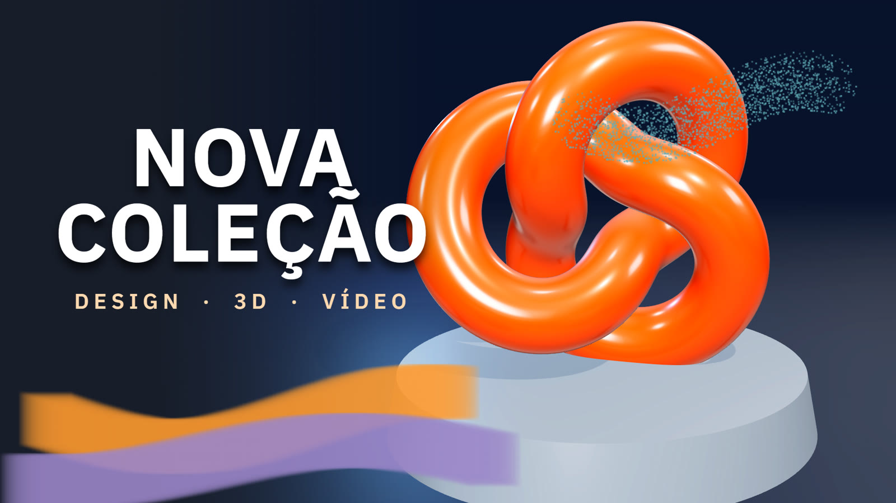
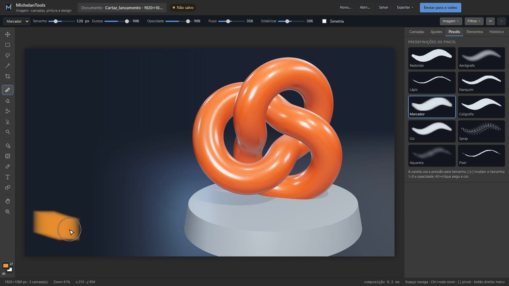
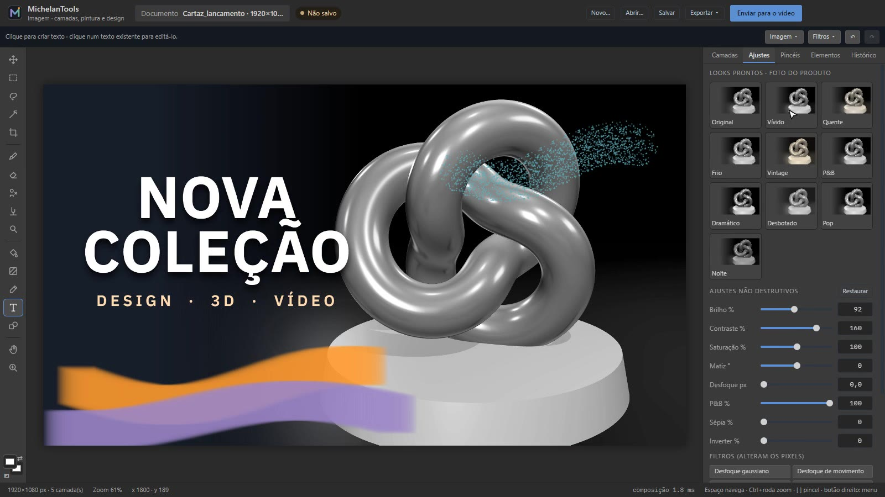

Editor de Imagem · PRO
Do rascunho ao cartaz, na mesma janela.
Pintura, camadas, máscaras e seleções com os controles que você espera de um editor de imagem. O resultado vai para a timeline com um clique, sem exportar e importar. Faz parte do plano PRO.
O resultado
Um cartaz de lançamento em cinco camadas
Fundo, a foto do produto (um render do próprio programa 3D), as pinceladas, o título e a linha de apoio. Cada camada continua editável no arquivo .mtimg.
- Estilos de camada
- Sombra projetada, brilho externo e contorno, sem mexer nos pixels.
- Looks não destrutivos
- Vívido, quente, frio, vintage, P&B, dramático e outros. Dá para trocar a qualquer momento.

Pintura
Pincéis que respondem à mão
Dez predefinições com pressão, fluxo, estabilização e simetria. O traço aparece ao vivo e só é gravado no fim, então desfazer volta exatamente o que foi pintado.
- Pincéis
- Redondo, aerógrafo, lápis, nanquim, marcador, caligrafia, giz, spray, aquarela e pixel.
- Retoque
- Carimbo, borrar, desfocar, clarear e escurecer.
- Preenchimento
- Balde e gradiente linear, radial, angular e refletido.

Seleção e máscaras
Recorte o que importa
Retângulo, elipse, laço, polígono e varinha mágica, com somar, subtrair, interseção, suavizar e expandir. A máscara de camada esconde sem apagar.
- 16 filtros com prévia
- Desfoque gaussiano e de movimento, nitidez, ruído, pixelizar, posterizar, níveis, vinheta e outros.
- 12 modelos
- Thumbnail, post, story, convite, capa de canal, título e terço inferior transparentes para o vídeo.

Ainda não tem
- Camadas de ajuste e transformação em perspectiva
- Abrir e salvar PSD
- CMYK e 16 bits por canal (o trabalho é em 8 bits sRGB)